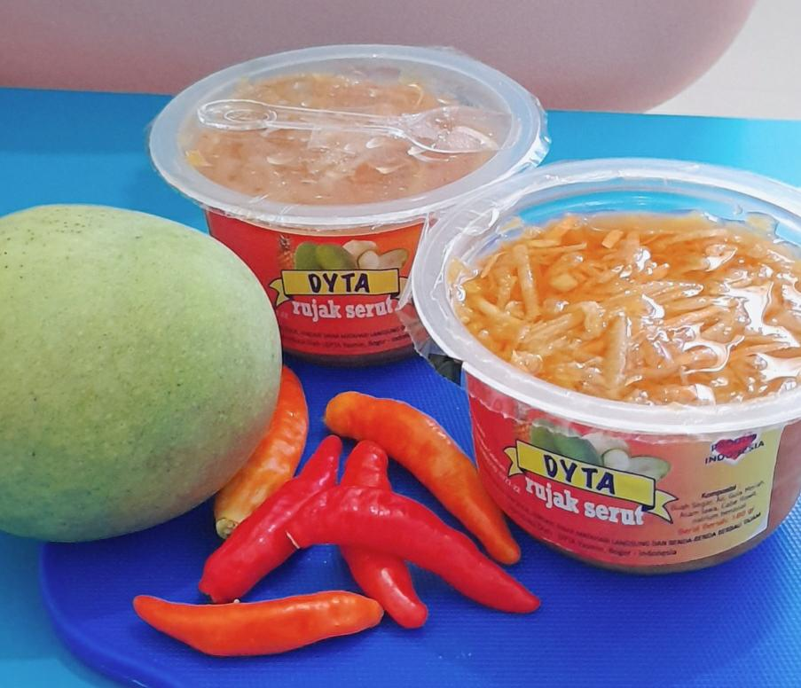

Apakah Anda Ingin menikmati Rujak yang segar dan nikmat?
Kuliner tradisional dari racikan buah segar pilihan yang kaya akan serat dan vitamin. Sangat cocok untuk menemani saat santai bersama keluarga tercinta, arisan maupun pertemuan keluarga. Rujak DYTA sebaiknya disimpan dalam lemari pendingin sebelum disajikan agar paduan rasa manis pedas dan asam nya terasa dengan sempurna
